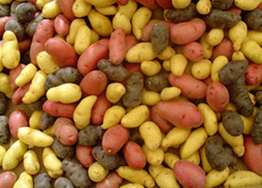

Potatoes are easy to grow, but they prefer cool weather so you should try to get them into the ground at the right time. You can order seed potatoes through mail-order garden companies or buy them at local garden centers or hardware stores. (You could use supermarket potatoes, but be aware they have probably been treated with chemicals to inhibit sprouting, so they may not grow well.) Store your seed potatoes in the refrigerator.
Your next step is to determine the recommended planting time for your climate. Since it takes potatoes two to three weeks to emerge from the ground, the earliest you should plant seed potatoes is two weeks before your last anticipated freeze date of 28 degrees Fahrenheit or lower. (If you don't know your local last freeze date, you can find it here.) About a week before your planting-out date, bring the seed out of the fridge and place it in a bright warm window for about a week. This will help break the spuds' dormancy and assure they will grow quickly when you put them into the still-cool spring soil.
If you garden in areas that have hot summers be sure to plant your potatoes early, and to play it safe, choose varieties that mature in early- or mid-season. This is because potatoes do not do well when the temperatures climb into the 90s. They may actually keel over and die when the temperature gets to 95 degrees. If a late planting or a late season variety runs into that hot weather while the tubers are in the early bulking stage you may get a very low yield.
To save work, or as a way to start a new garden bed, some people like to just toss their potato seed pieces onto bare ground or even a patch of sod, and then cover the pieces with a heavy mulch of straw or leaves. I've always wondered if you get as many potatoes with this short-cut method as you would if you buried the seed in a prepared garden bed, so I asked Jim and Megan Gerritsen, who grow and sell certified organic potatoes at Wood Prairie Farm in Bridgewater, Maine, what they think of this technique. The Gerritsens have been advising gardeners all across the continent since 1976.
Q: Does planting potatoes in a deep mulch on uncultivated ground still give reasonably good yields?
A: This deep mulch potato planting technique is called the Stout method, named after the old-time popular organic gardener Ruth Stout. Over the years Ruth had created beautiful soil and that fertile soil was a big factor in her success. Perform the Stout method on great soil and expect great yields of delicious potatoes. But try the technique on old worn out and unimproved ground and get ready to learn some patience and gain some humility. Potatoes are heavy feeders and they will respond dramatically to good fertility and tilth. Your yield will suffer to the extent that the soil you plant in lacks proper fertility and water.
Over the years, Stout's deep mulching technique will help you build wonderful soil fertility plus conserve water. In the meantime, working some organic fertilizer (we like fish meal) into the soil while you are building the organic matter and fertility will pay big dividends with any method of growing potatoes, including Ruth's.
As to laying the seed pieces on top of the ground, shallow planting the potato seed piece into 1 to 2 inches of soil beneath the deep mulch would be a good compromise and would provide superior results because it is more in keeping with tried and true traditional potato planting methods Also, be sure the mulch is not so dense and packed that the developing potato plants can't find their way to sunlight. One final word of caution: If you have big problems with slugs or mice the deep mulch method can add to your troubles.
If you have more questions about growing potatoes, or want to try out some of Wood Prairie Farm's 16 organic varieties, you can reach them at www.woodprairie.com or 800-829-9765. (And if you have trouble with insect pests on your potatoes, be sure to try their new 'King Harry' variety, which is naturally highly resistant to flea beetles, Colorado potato beetles and leafhoppers.)
*Browse our customized search tool, the Mother Earth News Seed and Plant Finder" href="http://www.motherearthnews.com/Find-Seeds-Plants.aspx" target="_blank">Mother Earth News Seed and Plant Finder to find mail-order companies offering the specific potato varieties you want to grow.
|
 ISTOCKPHOTO/DANIEL DEFABIO By growing your own potatoes, you can enjoy all kinds of tasty varieties - in numerous shapes and colors - that you aren't likely to find in any grocery store. |
|
|